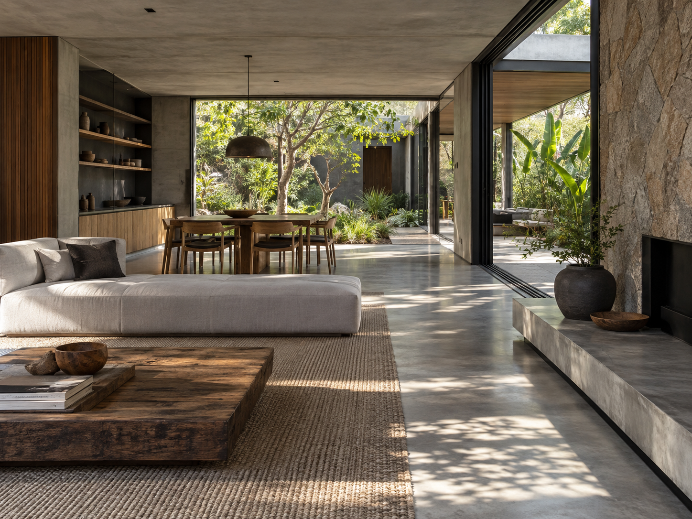
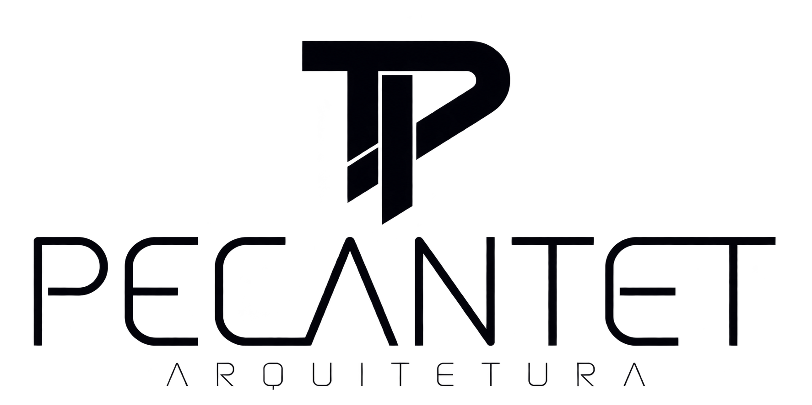
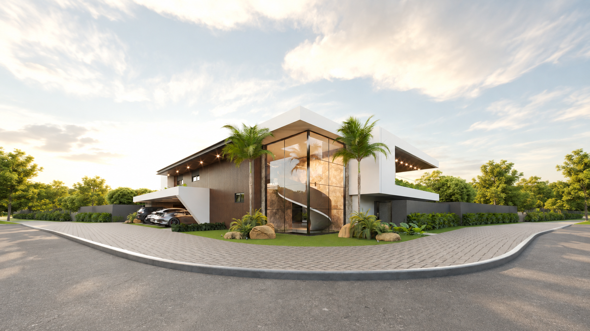
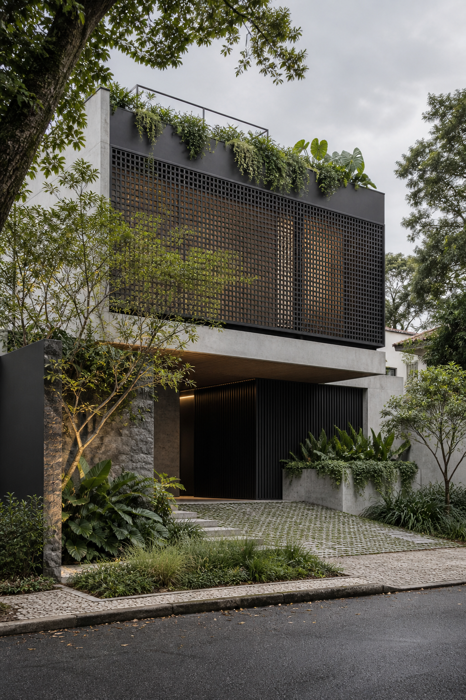

Residencial • Interiores


Cada projeto parte de uma história única. Traduzimos desejos, rotina e contexto em espaços precisos, duradouros e naturalmente confortáveis.
Uma seleção conceitual que expressa nossa busca por equilíbrio entre estética, técnica e natureza.


Imagens conceituais produzidas para representar a linguagem do escritório. Portfólio real em atualização.
Sustentabilidade não é um adorno: é critério de projeto. Estudamos o clima, a orientação solar, os materiais e o ciclo de vida de cada solução para criar edifícios mais eficientes e agradáveis.
Arquiteto e urbanista formado pela Universidade Federal de Mato Grosso do Sul — UFMS. À frente da Pecantet Arquitetura, desenvolve projetos de alto padrão guiados por excelência, propósito e sustentabilidade.
Seu olhar combina rigor técnico e sensibilidade para transformar necessidades reais em espaços que atravessam o tempo.
Cada decisão nasce da leitura do lugar, da rotina e dos objetivos de quem vai viver o espaço.
Soluções autorais que respeitam suas particularidades e transformam necessidades em identidade.
Liberdade para criar cada ambiente, proporção, material e detalhe em sintonia com você.
Precisão técnica, materiais duráveis e estratégias sustentáveis acompanhadas do conceito à obra.
“O verdadeiro luxo é viver em um espaço feito para durar.”
Solicite seu atendimento ↗